Lazy Jira Timelog
A Chrome and Edge extension that notices the time you spend on anything tied to a Jira issue, then hands you a ready list of worklogs to send to Jira in one click. No timer to start, no server, no chat bot.
How it works
The browser watches only the focused tab. When that tab is about a Jira issue, a background worker writes a small heartbeat every 30 seconds. At review time heartbeats become sessions, sessions become one draft row per issue, and you confirm them before anything reaches Jira.
Counts
Only the focused tab, and only when it's a Jira issue, a PR or branch whose title or name has the key (e.g. PAY-7), or any page showing a known key.
Stops
After 15 min without input, when the screen locks, or 2 min after you switch to something unrelated.
Never sent
Page addresses and browsing history. Only the issue key, the site name and PR titles are stored, in the browser.
Nothing auto-logs
Every worklog, including anything AI drafts, waits for you to press Log.
Install, connect and update
One-time setup from a git clone. You need Git and Node.js 18 or later. The same build works in Chrome and Edge.
Install
- Clone the repository and build the extension:
git clone https://github.com/Alexk0309/lazy-jira-timelog.git cd lazy-jira-timelog/browser-extension npm install npm run build
This createsbrowser-extension/dist. That folder is the extension. - Open the extensions page and turn on Developer mode.
- Chrome:
chrome://extensions, switch at top right. - Edge:
edge://extensions, switch in the left sidebar.
- Chrome:
- Click Load unpacked and pick the
browser-extension/distfolder. Settings opens by itself. - Enter your Jira site, e.g.
https://your-team.atlassian.net. - Choose how to sign in.
- Browser (default) reuses the Jira session you're already logged in to.
- API token is the fallback if your company blocks that. Create one at id.atlassian.com → Security → API tokens.
- Click Test connection. You should see "Connected as <you>… N projects found."
- Self-hosted GitLab or another tool? Add its domain under Sites and allow it when the browser asks.
- Pin the extension from the browser's puzzle-piece menu so the badge and popup are always visible.
Update to a newer version
- Pull and rebuild:
cd lazy-jira-timelog/browser-extension git pull npm install npm run build
- On the extensions page, click the reload icon on the Lazy Jira Timelog card. Settings, your ticket list and tracked time are kept.
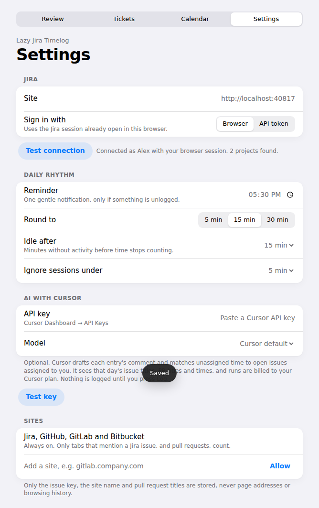
Let it track your day
There's nothing to start or stop. Just work.
- Open the Jira issue, PR, branch or doc you're working on and keep it focused.
- Name branches and PRs with the issue key (
PAY-7-refunds, "PAY-7 Refund flow") so time lands on the right issue automatically. - A PR without a key still counts. It's kept as Unassigned under the PR title, and you pick the issue at review (use case 05).
- Step away and tracking pauses on its own: 15 min idle, screen lock, or 2 min on unrelated tabs.
- Glance at the toolbar icon. The badge shows how much is still unlogged (e.g.
45m,3h).
Review and log today's time
The core loop, usually once at the end of the day.
- Click the toolbar icon. The popup shows today's total "to log" and one row per issue, rounded to 15 min. Use the tab bar to switch to Tickets, Calendar or Settings, and the arrow to open it as a full page.
- Tap a row to open it. You can:
- change the issue in the issue field. Before you type it offers your ticket list, flagged first; typing searches Jira;
- adjust time with the − / + stepper;
- edit the comment (PR titles are filled in for you);
- Split the time in two, then point the new half at another issue;
- Discard it.
- Press Log on a single row, or the big Log 1h 15m button to send every ready row at once.
- Logged rows turn green and say Logged. Rows still needing an issue are skipped and counted under the button ("1 entry needs an issue first").
- Each row shows the ticket key, its title and, if the ticket has an estimate, a progress bar. See reading the estimate bar.
- Missed a day? The orange dot in the week strip marks days with time still to log. See log time on another day.
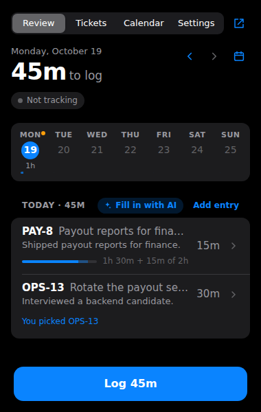
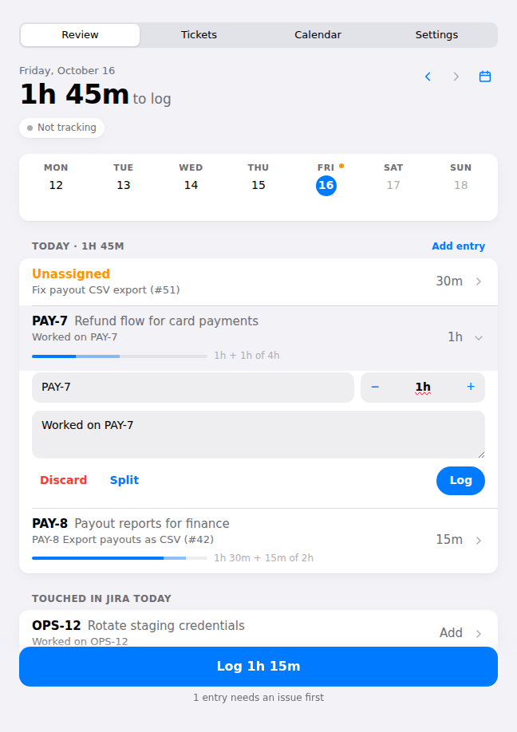
Reading the estimate bar
Solid blue
Time already logged in Jira against the ticket's original estimate.
Light blue
The time this row is about to add. The label reads e.g. "1h + 1h of 4h".
Red
Logged time has gone over the estimate, e.g. "2h 15m of 2h".
No bar
The ticket has no original estimate in Jira. Logging lowers the remaining estimate, the same way Jira does.
Log time on another day
Forgot yesterday, or worked on something the browser never saw? Review can show and log any past day.
- On the Review tab, look at the week strip under the header. Each day shows hours already in Jira; an orange dot means tracked time is still waiting to be logged.
- Pick a day by tapping it in the strip, stepping with ‹ ›, or using the calendar button to jump to any date. Future days are greyed out; Today brings you back.
- If other days still have time waiting, a line such as "Also to log: Today 45m" links straight to them.
- Press Add entry to add time nothing tracked on the day on show. Pick the ticket, type a duration like
1h 30m, add a comment. - Press Log. The worklog is posted on that day (starting 09:00), and the strip updates.
- From the Calendar tab, Add log on a selected day opens Review on that day.
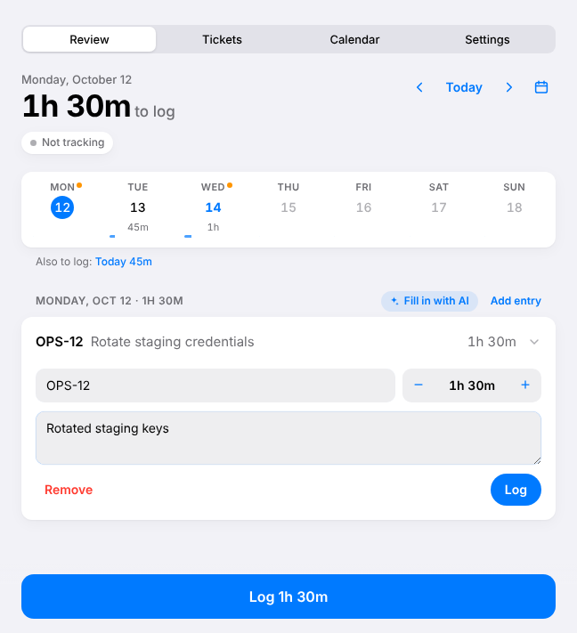
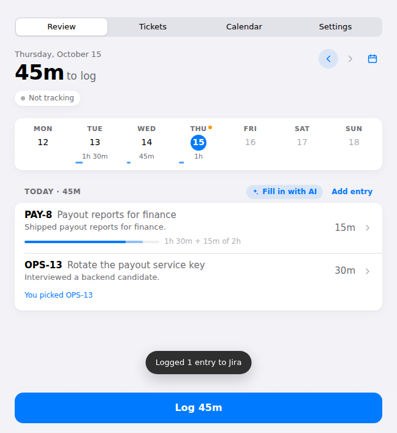
Assign time from a PR without a key
Orange Unassigned rows are PR time the extension couldn't tie to an issue.
- Find the orange Unassigned row. Its subtitle is the PR title, e.g. "Fix payout CSV export (#51)".
- Tap it and type a key or words from the issue summary into the issue field. Pick the match.
- Check the comment (it starts as the PR title) and the time.
- Press Log. Or let AI suggest the issue (use case 08).
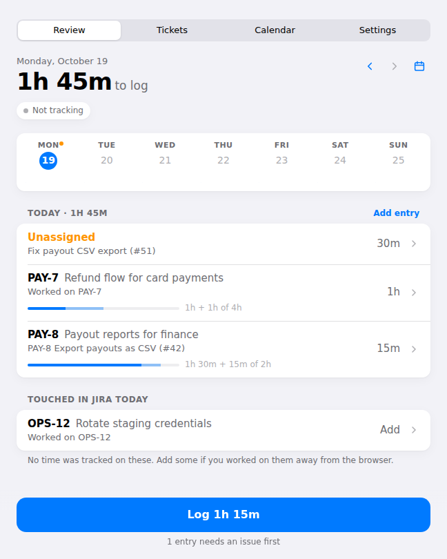
Add work the browser didn't see
Meetings, whiteboarding, local coding. Two ways to capture it.
- Look under Touched in Jira today. It lists issues whose status you changed today, and issues assigned to you that were updated today, that have no tracked time.
- Tap Add on one (e.g. OPS-12). A row opens with no time yet.
- Set the time with +, write a comment, press Log.
- For anything not on that list, press Add entry (see another day), describe it to AI (describe your day), or split an existing row and repoint the half.
Build your ticket list
The tickets you're working on right now, kept in your own order. The issue picker and Fill in with AI use this list first, which helps a lot when Jira is shared by many teams.
- Open the Tickets tab.
- Add tickets any of three ways:
- Fetch my assigned tickets adds every open ticket assigned to you in one click;
- type in Search Jira to add a ticket and pick a result;
- Paste keys, then paste keys or links (e.g.
PAY-12 PAY-14 OPS-3) and press Add. Keys Jira doesn't know are skipped.
- Flag the priorities. Tap the flag on one ticket, or tick several checkboxes and press Flag or Unflag in the bar that appears. That bar also has Remove.
- Tickets are grouped under their parent.
- Sub-tasks sit indented under a parent that's on your list.
- If the parent isn't on your list, it still shows as a shaded heading ("Parent, not on your list"). Its checkbox selects all its sub-tickets at once.
- Fold groups away. The count button beside a parent (e.g. 2 ⌄) collapses or expands its sub-tickets. Collapse all and Expand all sit above the list. What you collapsed is remembered.
- Set your order. Drag a ticket by its handle, or focus the handle and use ↑ ↓. The heading switches to "Your order"; Sort by created date puts it back to newest-created first.
- Tickets with an original estimate in Jira show an estimate bar under them, e.g. "2h 15m of 4h". Tickets without one show no bar.
- Keep it tidy. The refresh icon pulls fresh status from Jira, and Remove N done tickets appears when some are finished.
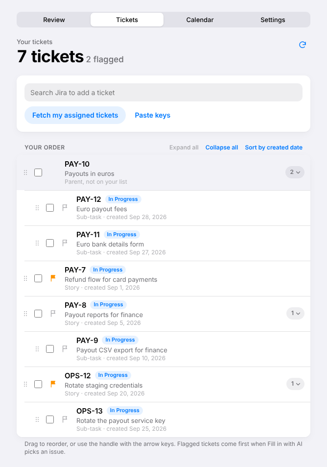
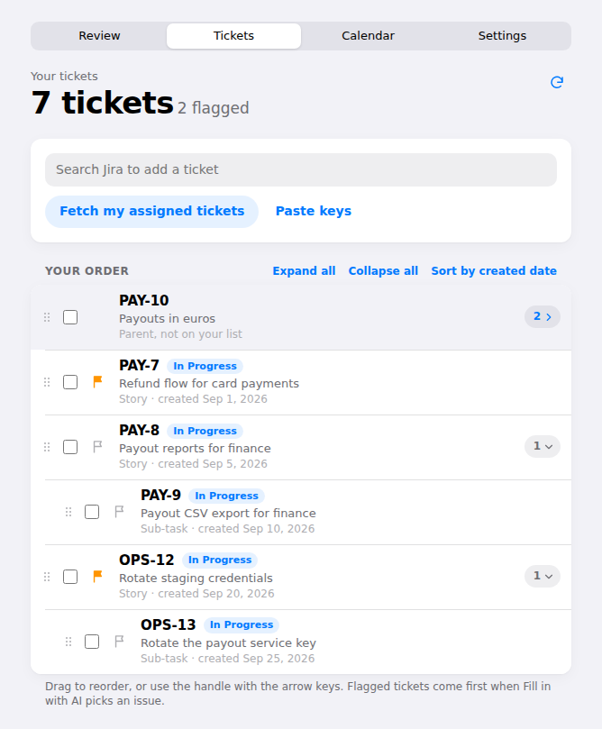
Fill in with AI
Optional. Cursor writes a one-line comment for each entry and suggests an issue for unassigned time, looking at your ticket list first.
Set up once
- In Cursor, open Dashboard → API Keys and create a user API key.
- Paste it under AI with Cursor in Settings. Allow
api.cursor.comwhen the browser asks. - Click Test key. Optionally pick a model.
Each day
- On the review screen, press ✦ Fill in with AI next to the day heading.
- Leave the box empty and press Fill in. You can close the popup while it thinks; the result is waiting when you reopen it.
- Check the result. Matched rows show "Matched by AI: <reason>". Cursor prefers tickets on your list, flagged ones first. Every match is checked in code against your list and your open assigned issues.
- If Cursor wasn't sure, a row carries a question instead of a guess. See use case 10.
- Open any row to tweak it, then press Log as usual.
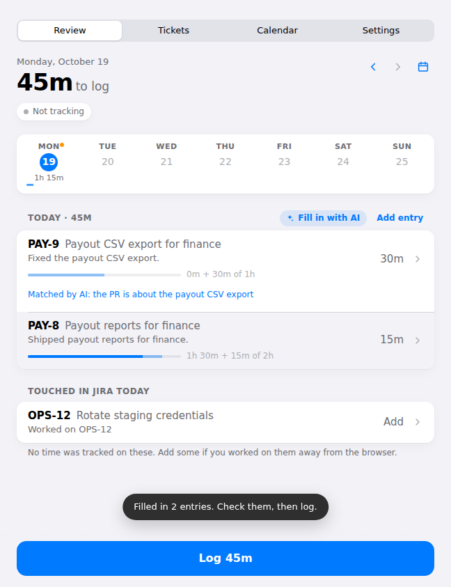
Describe your day and let AI add entries
For meetings and other work nothing tracked. Same button, plus one sentence from you.
- Press ✦ Fill in with AI. A text box opens above the rows.
- Write your day in plain words, with times: "standup 15m, 1h pairing on PAY-12, sprint planning".
- Press Fill in. Cursor:
- sets the time on tracked entries you gave a time for;
- adds new rows for work nothing tracked, marked "Added from your summary".
- Added rows use a ticket on your list, an issue assigned to you, or a key you typed (like
PAY-12). If Cursor can't choose, it asks (use case 10); otherwise the row stays Unassigned for you to pick. - Review, assign leftovers, press Log.
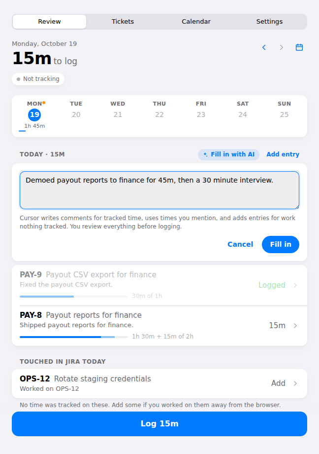

Answer the AI's questions
When two tickets fit about equally, Cursor asks instead of guessing. One tap answers it.
- After Fill in, the toast says how many questions need you ("1 question needs your answer").
- Find the blue card under the row, e.g. "Which ticket should the 30m interview go to?"
- Tap one of the 2 to 4 ticket options. Each shows the ticket summary and, sometimes, why Cursor offered it ("flagged on your list").
- The row is filled straight away with no second AI run, and shows "You picked OPS-13". Your answer is remembered if you close the popup.
- None fit? Another issue… opens the normal issue picker. Skip leaves the row unassigned.
- Press Log as usual.
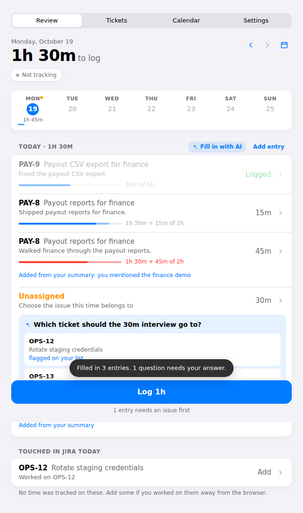
See, edit, move or delete past worklogs
The calendar shows what's actually in Jira, not what was tracked.
- Open the Calendar tab.
- The month view shows hours logged per day and the month total. Use ‹ › or Today to move around.
- Pick a day. Its worklogs are listed underneath with ticket title, start time, comment and the ticket's estimate bar.
- Tap a worklog to change any of:
- the ticket: type in the issue field and pick another;
- the date and start time;
- the duration (type
1h,45mor use the stepper); - the comment.
- To remove one, tap Delete, then confirm with Delete again.
- Add log above the day's list opens Review on that day so you can add time.
- Open in Jira jumps to the issue if you need more.
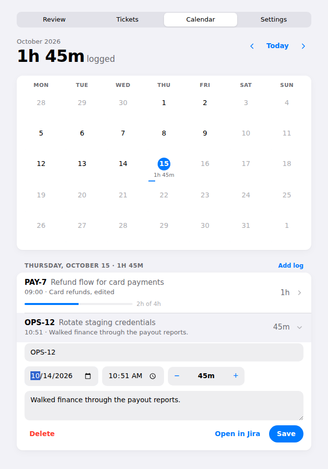
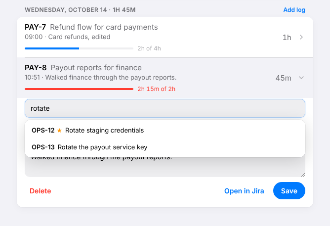
Get reminded, once
- The toolbar badge always shows unlogged time.
- At 17:30 (changeable in Settings → Reminder) you get a single notification, only if something is unlogged.
- Click it to open the review page and log.
Tune the settings
Open the Settings tab (from the popup it opens in a page). Changes save as you make them.
| Setting | Default | What it changes |
|---|---|---|
| Site / Sign in with | Browser | Which Jira, and whether to reuse your browser session or an API token. |
| Reminder | 17:30 | When the one daily nudge fires. |
| Round to | 15 min | 5, 15 or 30 min steps for rows and the stepper. |
| Idle after | 15 min | Minutes without input before time stops counting. |
| Ignore sessions under | 5 min | Drops brief visits so they don't become rows. |
| API key / Model | Empty | Turns on Fill in with AI. Model defaults to Cursor's. |
| Sites | Jira, GitHub, GitLab, Bitbucket | Add other hosts (self-hosted GitLab, Confluence, Figma) that should count. |
Cheat sheet
| I want to… | Do this |
|---|---|
| log today | Toolbar icon → check rows → Log |
| fix a wrong issue | Tap row → type in issue field → pick |
| split 2h across two issues | Tap row → Split → set issue on the new half |
| log a meeting | Touched in Jira today → Add, or describe it in Fill in with AI |
| keep my current tickets handy | Tickets tab → Fetch my assigned tickets or search / paste keys |
| tell AI what matters now | Tickets tab → tap the flag, or tick several → Flag |
| hide sub-tickets | Tap the count button by a parent, or Collapse all |
| reorder my tickets | Drag the handle, or focus it and press ↑ ↓ |
| answer an AI question | Tap a ticket option on the blue card, or Another issue… / Skip |
| get comments written | ✦ Fill in with AI → Fill in |
| log yesterday | Review → tap yesterday in the week strip → Add entry → Log |
| move a worklog to another ticket | Calendar tab → tap it → change the issue → Save |
| change a worklog's date | Calendar tab → tap it → change the date → Save |
| see if a ticket is over estimate | Look for a red bar under the row, on Review, Tickets or Calendar |
| change last Tuesday | Calendar tab → pick the day → tap the worklog → Save |
| delete a worklog | Calendar tab → tap it → Delete twice |
| get the latest version | git pull, npm install, npm run build, then reload the extension card |
| open a view full size | Arrow button beside the popup tabs |
| track a new site | Settings → Sites → add domain → Allow |